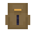
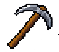
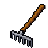
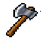
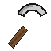

Naglo-load...
Tralala
▶️ Play
📂 Load
⚙️ Settings
🚪 Exit
Farmer
❤️
⚡
🍗
Lv. 1





Craft
💍
🪖
💍
🧤
👕
🥾
🐾
❤️
⚡
🍗
✨
LVL
1
ATK
0
DEF
0
Crit DMG
0%
Crit Chance
0%
Crafter
<
Craftable Items
Stove
✕
⟵
⟵
Missionary
✕
🪙
0
Quantity?
−
+
Receive: 🪙0
Cancel
Confirm
Quantity?
−
+
Gold: 🪙0
Cancel
Confirm
☀️
Jan 1, 2000
06:00
Col: 0, Row: 0
☰
💾
Save
📂
Load
⚙️
Settings
🚪
Exit
Settings
✕
🖥️ Fullscreen
🗑️ I-reset ang laro (burahin ang save)
I-load ang laro
📥 I-import
✕
Wala ka pang naka-save na laro. Pindutin ang "Save" sa menu para gumawa ng una mong save.
🏃